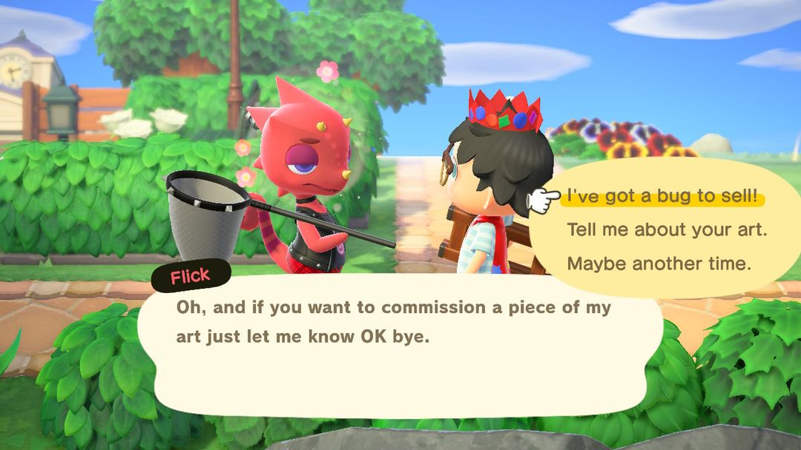
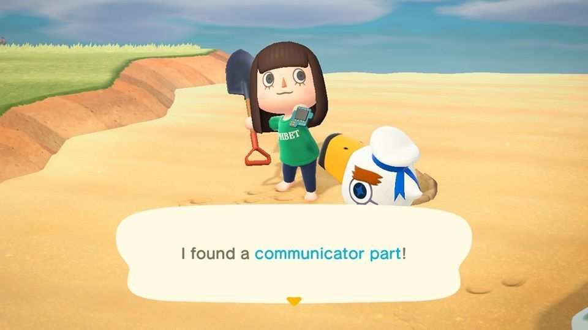
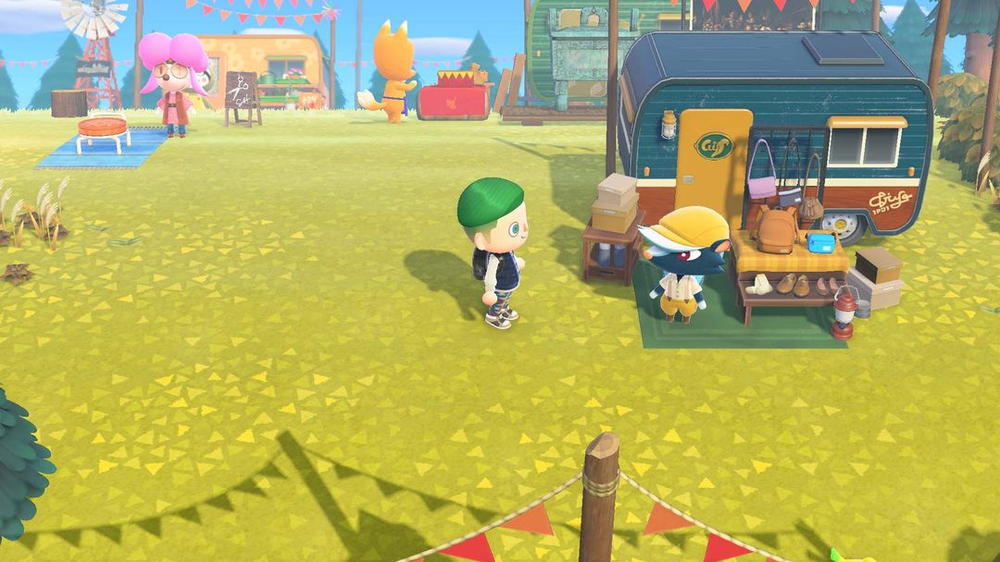
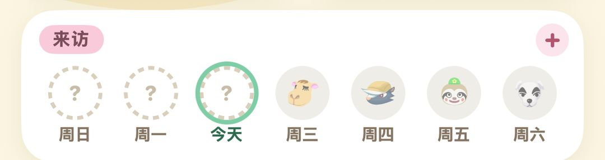

每周会来的 NPC：谁哪天来、来了干什么
曹卖、K.K.、狐利、骆岚……一张表看完，顺便说清 2.0 巴猎岛和航平
岛上除了住着的岛民，还有一群隔三差五上门的访客：周日来卖大头菜的曹卖，周六晚上在广场唱歌的 K.K.，还有平日里轮流露面的狐利、骆岚、然然、俞司廷……他们大多只待一天，错过了就得等下一轮，所以早上上线先弄清今天来的是谁，安排起来会顺很多。
周末两位基本雷打不动：周日是曹卖，周六是 K.K.。周一到周五每天最多来一位，来谁是轮着的。傅珂和幽幽只在晚上出现，不占这个名额，能和白天的访客撞在同一天。到了 2.0，巴猎岛上开了集市，然然、薛革、骆岚、狐利不来你岛上的日子，也能去那边找他们。
01先弄清排班规则
岛上每天早上 5 点换日。除了傅珂和幽幽，岛上一天最多只来一位特别访客。这一周谁来、哪天来，在周初就已经排好了；不是每个人每周都有份，哪一周没轮上的，下一周会优先排进来。所以某位访客好几天没露面也不用急，多半下周就到。
当天来的是谁，早上的广播会提一句。上线后先听一耳朵广播，就知道今天该去哪找人。有的访客在服务处前的广场支起摊子，一眼就能看到；有的会在岛上四处转悠，得自己沿着海滩、河边去找。
02一周时间表
| 谁 | 哪天、几点 | 来了干什么 |
| 曹卖 | 周日 5:00～12:00 | 卖大头菜 |
| K.K. | 周六，18:00～24:00 点歌 | 广场唱歌，唱完送唱片 |
| 俞司廷 | 平日，待到第二天 5:00 | 钓鱼挑战；收鱼按 Nook商店 1.5 倍价 |
| 龙克斯 | 平日，待到第二天 5:00 | 收虫按 1.5 倍价 |
| 狐利 | 平日，待到第二天 5:00 | 船上卖美术品和家具 |
| 骆岚 | 平日，在岛上走 | 卖地毯、不可思议壁纸、不可思议地板 |
| 薛革 | 平日，广场 到 22:00 | 卖鞋、袜子、包 |
| 绵儿 | 平日，广场 | 时尚考验，奖裁缝屋优惠券 |
| 然然 | 平日，广场 到 22:00 | 卖灌木苗、花、蔬菜苗；杂草按 2 倍收 |
| 吕游 | 平日，海滩上 | 帮他找 5 个通信装置零件 |
| 海盗 | 平日，海滩上 | 潜水帮他找通信装置 |
| 傅珂 | 流星雨的晚上 | 每天送一份星星或星座的DIY手册 |
| 幽幽 | 晚上 20:00 到第二天 5:00 | 帮他抓回 5 个魂魄，换一样东西 |
| 航平 | 每天，码头 | 1,000 Nook里数出海一次（2.0 起） |
表里的「平日」指周一到周五，这几位在平日里轮流来，一天只会撞上其中一位。

龙克斯来了，收虫比 Nook商店 贵一半（英文版画面）（图：Nookipedia）
03每位访客来了怎么用
曹卖、K.K.
曹卖要等 Nook商店 盖好才会上岛，大头菜也只有周日上午能从她手里买到，过了中午 12 点人就走了。想炒大头菜的话，周日起床第一件事就是去找她。
K.K. 来岛上唱歌，要岛屿评价到 3 星、开过第一场演唱会以后才算正式开始。每周六晚上 6 点到 12 点能找他点歌，唱完会送你唱片。周六广场有钓鱼大赛、捕虫大赛这类活动时，K.K. 会改到周日来；周日也排了活动，就再往后挪到周一。另外，你过生日那天他还会专门来一趟。
俞司廷、龙克斯
这两位要等服务处盖成大楼以后才会来。他们收鱼、收虫都按 Nook商店的 1.5 倍价，比平时多卖一半钱。钓鱼大赛、捕虫大赛前后攒下的鱼和虫，先别急着卖给 Nook商店，留着等他们来再出手。
交给他们 3 条同样的鱼，或者 3 只同样的虫，第二天就会寄来这种鱼或虫的模型，想摆模型的可以趁他们在岛上时凑齐交过去。俞司廷那边要先完成他的钓鱼挑战，才肯收你的鱼。
狐利
博物馆捐满 60 件后，狐利才会上门。他第一次来时不在船上，就在岛上走来走去，向你兜售一幅画，4,980 铃钱。这一幅一定是真品，买下来捐给傅达，博物馆就能扩建美术区。
从第二次起，他的船停在岛北边的小沙滩，每次摆出 4 幅美术品，每幅 4,980 铃钱，有真有假。假的买回去，博物馆是不收的。
骆岚
骆岚不摆摊，在岛上四处走，得自己去找。她卖的地毯分小、中、大三种，分别是 1,000、1,500、2,000 铃钱，买一块对应送 1、2、3 张骆岚兑换券。兑换券攒到 5 张，能换一张你还没有的不可思议壁纸或不可思议地板。不想慢慢攒的话，不可思议壁纸、地板也能直接买，3,000 铃钱一张。
绵儿
绵儿会出一个穿搭主题，你回去换上符合主题的衣服，再来找她。穿对了，她会奖一件自家品牌的服装，第二天 ABLE SISTERS 也开始卖这个牌子。之后还会寄来 1～2 张裁缝屋优惠券，每张能在店里换一件 3,000 铃钱以内的东西。
吕游、海盗
吕游会躺在海滩上睡大觉，叫醒他以后，他托你找回散落的 5 个通信装置零件，零件埋在沙滩里，挖出来交给他就行。第二天他会寄来一件外国纪念品。帮满 30 次，寄来的是金色铲子的DIY手册。零件要是挖出来没还给他，第二天会变成生锈零件。
海盗要等你买过潜水衣以后才会出现。他把通信装置掉进了海里，你得潜下水帮他捞上来，第二天他会寄来海盗系列的家具或衣服。

吕游的通信装置零件埋在海滩上（英文版画面）（图：Nookipedia）
傅珂、幽幽
傅珂一周最多来一次，她来的那晚会下流星雨；K.K. 开演唱会的晚上她不会来。找她说话，每人每天能学到一份DIY手册，星星或星座主题的都学完了，她就改送星星碎片。
幽幽晚上 8 点以后才出来。走到他跟前一搭话，他会被你吓一跳，把 5 个「幽幽的魂魄」吓得满岛乱飞。拿捕虫网把魂魄一个个抓回来交给他，就能在「新东西」和「贵东西」里挑一样当谢礼。没还回去的魂魄，第二天就消失了。
小提示Switch 2 版里，对着吕游、海盗、幽幽用手持扩音器喊一声，就能直接把人叫醒或吓散，不用站在旁边一直按 A。
042.0 和 3.0 加了什么
巴猎岛集市
2.0 以后，岛屿评价到 3 星、K.K. 开过首场演唱会，巴猎岛上就会多出一片集市，然然、薛革、骆岚、狐利都在里面有摊位。每个摊位要先出 10 万铃钱才开张，一天只能开一个，想全开得分几天来。
摊上的商品每周一换一批，想买的东西没赶上，下周再来看看。他们本人来你岛上的那天，巴猎岛上对应的摊位是关着的。开了摊以后，然然、骆岚、狐利仍然大约两周来你岛上一次，两边都能碰到他们。
航平出海
同样是 2.0 起，岛屿 3 星、K.K. 开过首场演唱会以后，码头上的航平就能载你出海：每天花 1,000 Nook里数坐一次船，去一座随机的小岛。到了 3.0，布置完旅馆的第一间 VIP 客房，每天就能多坐一趟，这一趟收 100 旅馆券。

2.0 的巴猎岛集市，然然、狐利、薛革都有自己的摊位（图：Nookipedia）
访客一多，哪周谁来过、谁还没来很容易记混。可以用动森圈圈岛屿页的「来访」一栏，一周七天一格一格点上，来了谁一目了然。

动森圈圈岛屿页：周日到周六，每天来了谁点一下就记上
动森圈圈 · 小程序和 iOS App 都搜「动森圈圈」